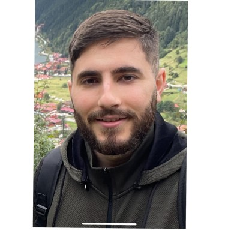

Razi Dallasheh

Summary
I am a diligent and hardworking individual with a proven ability to quickly grasp new concepts and skills. Throughout my academic and professional journey, I have consistently demonstrated my dedication to achieving goals and overcoming challenges.
Education
- Braude Academic College of Engineering, Bachelor of Science (BSc) degree, in the city of Karmiel, Israel.
Work Experience
2015: June-August
- I worked with a personnel company in hotels in Tiberias as waiter and various hotel services
2016: July-August
- I worked at the Prinir factory in a variety of positions such as canned tomato work
2018: February-August
- I worked at McDonald's in a variety of positions such as kitchen work and cashier work
2019: July-Octobor
- I worked as a waiter at the Setai Galilee of Tiberias hotel
2022: August-November
- I worked as package delievery driver in Haifa for the Buzzr package delivery company
Skills
- Communication Skills
- Ability to learn new concepts and skills
- Ability to work with fellow staff members
- Ability to work under pressure and thrive in a stressful work environment
Contact Me